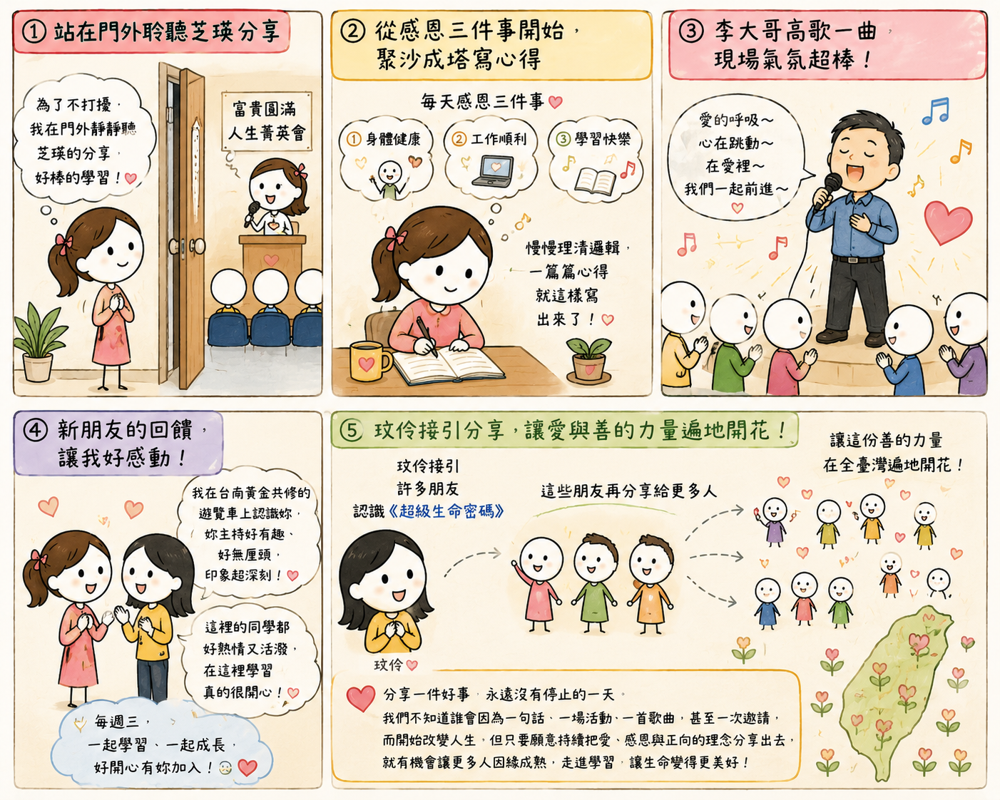

日期：2026/07/08

晚上是固定每週三的富貴圓滿人生菁英會。因為工作稍微耽擱了一些時間，所以抵達課室時已經開始分享了。正準備走進去時，發現剛好是芝瑛正在台上分享。為了不打斷她的分享，也不影響大家專注聆聽，我便靜靜地站在課室門外，把整段分享聽完。
芝瑛分享，她現在每天都為自己設定寫兩篇心得。一篇是早上晨讀後的學習心得；另一篇則是利用下午工作休息的時間，一邊聽導師音檔，一邊沉浸在《超級生命密碼》的學習氛圍中，再把自己的體會整理成心得。
她也分享，一開始並不是直接寫心得，而是先練習每天感恩三件事情。慢慢地，從感恩開始，學會整理思緒、理清邏輯，最後一篇又一篇心得，就這樣自然而然地寫了出來。
她還笑著說，自己的國文還算可以，但數學真的不太好，上班時很多時候還是要依靠計算機。我站在門外忍不住笑了一下，心裡想：「至少會善用計算機就很好啦！」因為我自己的數學也沒有特別好，但懂得善用工具，把事情做好，同樣是一種智慧。
後來，菁英會裡也看到好久不見的玟伶姐，今天和蘇大哥一起來參加菁英會。惠惠姐說，玟伶姐一路以來接引了許多朋友認識《超級生命密碼》，而這些朋友又繼續分享給更多人，讓這份善的力量在全臺灣慢慢遍地開花。
聽到這裡，我也再次提醒自己，分享一件好事，永遠沒有停止的一天。我們不知道誰會因為一句話、一場活動、一首歌曲，甚至一次邀請，而開始改變人生。但只要願意持續把愛、感恩與正向的理念分享出去，就有機會讓更多人因緣成熟，走進學習，讓生命變得更美好。
今天會後會時，也有一位新朋友主動向主持人表示，希望能唱一首〈愛的呼吸〉和大家分享。李大哥一站上台，我就發現他真的準備得非常用心。無論是表情、手勢、情感，甚至每一句歌詞，都投入了滿滿的心意。
台下的大家也自然地跟著一起唱、一起感受，整個現場充滿溫暖與歡樂。我深深感受到，當一個人真心投入時，那份熱情真的會感染身邊每一個人。
下課的時候，遇到一位新朋友和我聊天。她告訴我，之前曾參加台南的黃金共修，當時就在遊覽車上認識了我，直到現在都還記得我當時有點無厘頭、卻很歡樂的主持風格。
她還說，來到菁英會後，發現這裡的每一位同學都非常熱情、活潑，讓她覺得在這裡學習很開心、很自在。
原來，一個人的熱情，也許會影響一群人；而一群人的熱情，又能溫暖更多第一次踏進來的新朋友。
今晚讓我最大的體會是，一個好的學習環境，不只是因為課程精彩，更是因為每一位願意付出、願意分享、願意投入的人，共同營造出來的氛圍。這份熱情會互相感染，這份善意會持續流動，而每一次真誠的分享，都可能成為另一個人生命改變的開始。
我也期許自己，繼續保持這份初心，把歡樂、熱情與正向的能量分享出去，陪伴更多有緣人，一起在人生的道路上持續學習、持續成長，也把這份愛與感恩，一棒接一棒地傳遞下去。